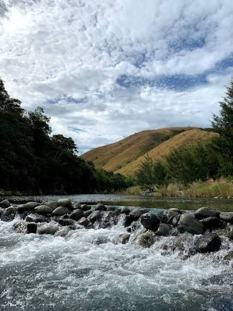
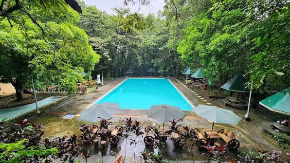

Maples River
Pogonsili Aguilar, Pangasinan
Maples is a river that is surrounded by beautiful mountains and it is a good place to cool off when it is in summer season.

View detailsA guide to the hidden gems of Pangasinan that is worth your visit.
Pogonsili Aguilar, Pangasinan
Maples is a river that is surrounded by beautiful mountains and it is a good place to cool off when it is in summer season.

View detailsMapita Aguilar, Pangasinan
Viewdeck is known for it's beautiful mountain views and when driving in the 'daang katutubo' it further elevates the peaceful drive.

Mangatarem, Pangasinan
Manleluag Spring is open for public to experience the natural hot spring pools.
